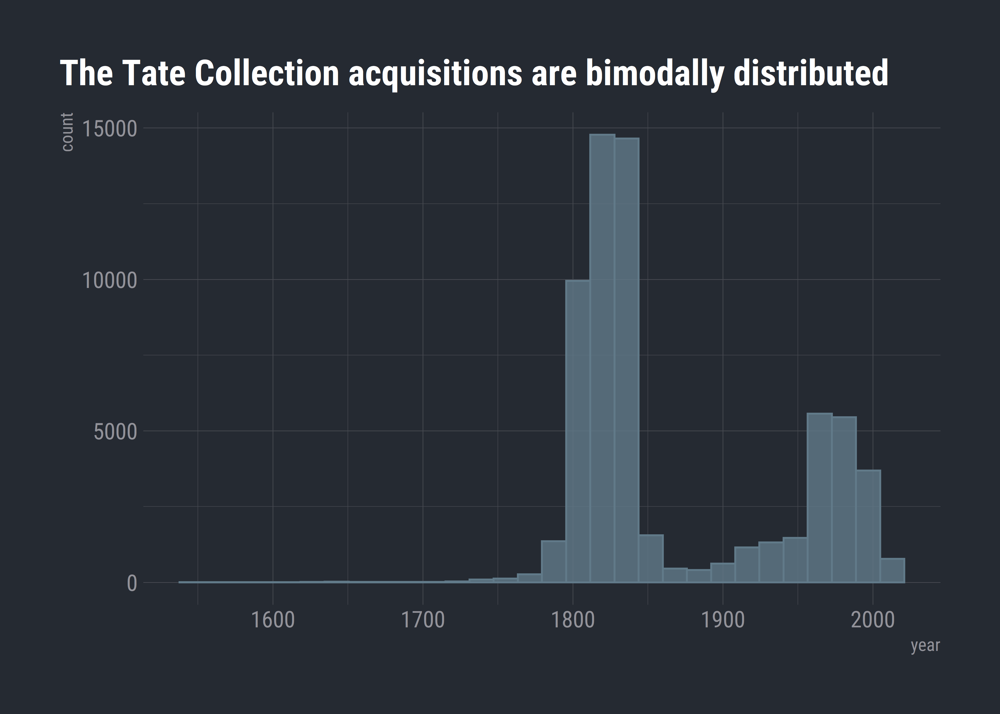
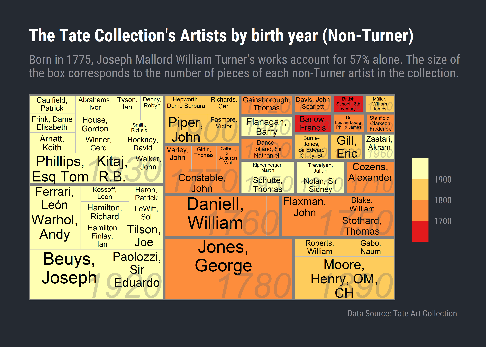
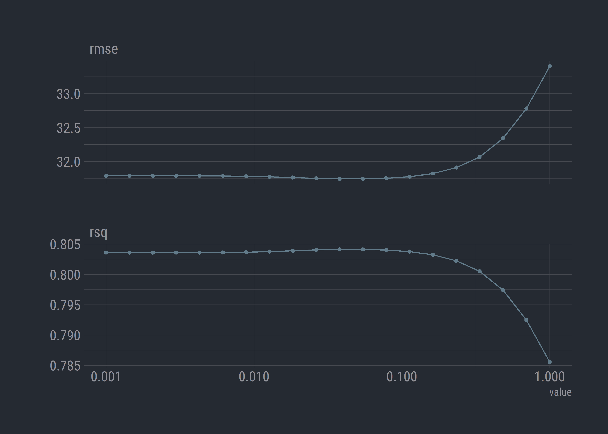
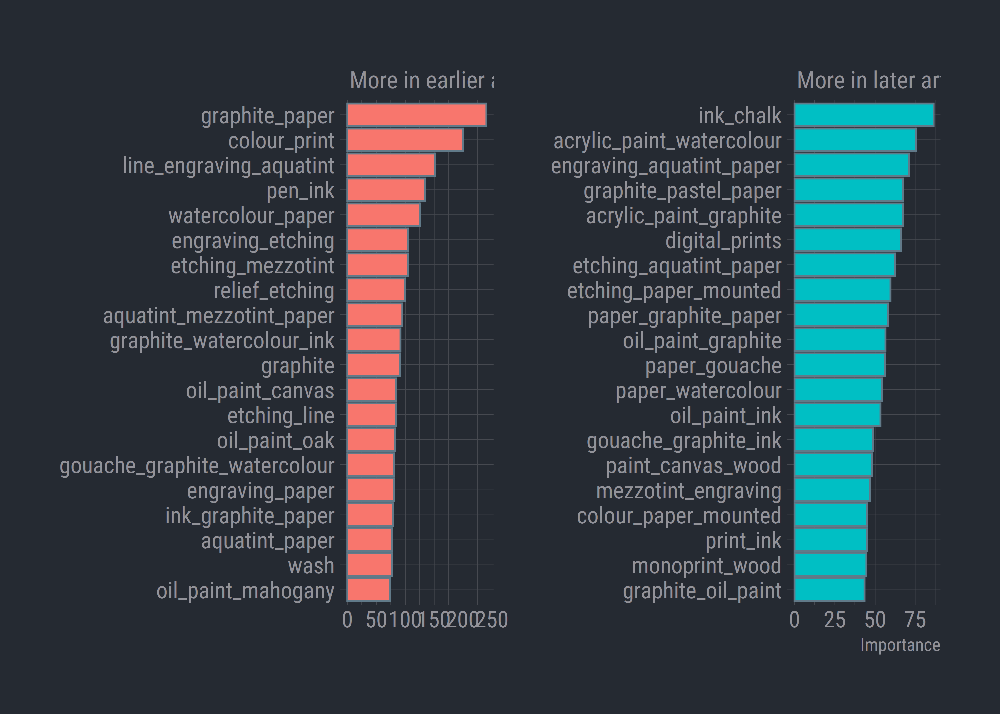
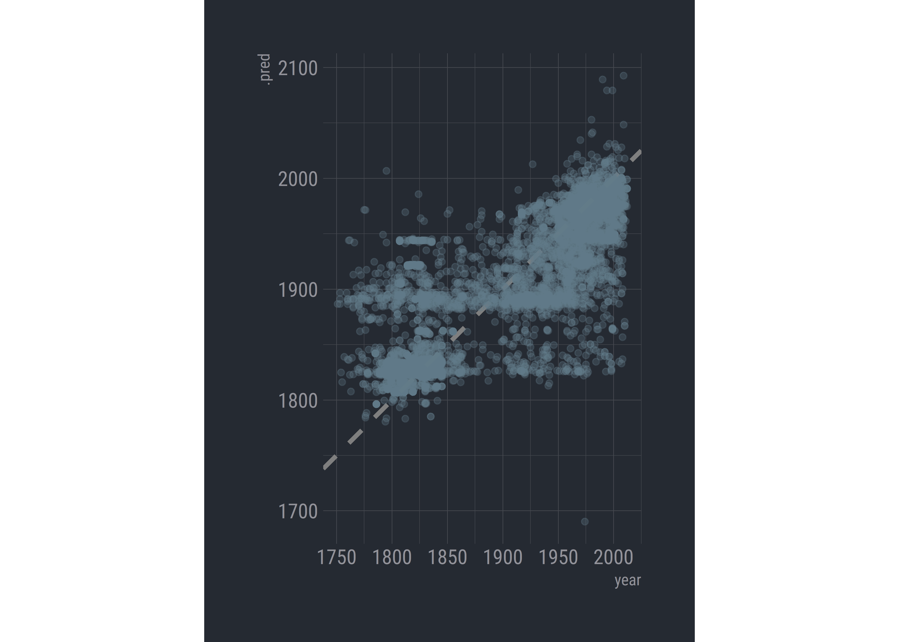
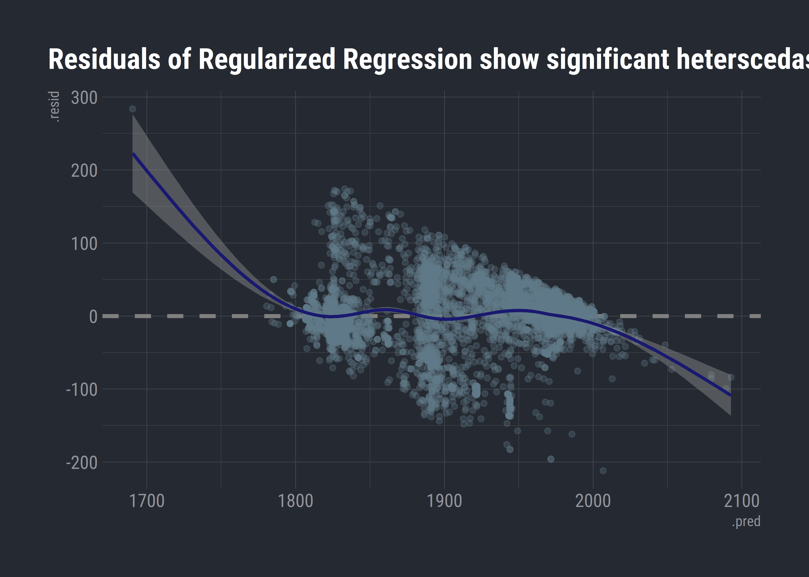

Last updated: 2021-01-15
Checks: 7 0
Knit directory: myTidyTuesday/
This reproducible R Markdown analysis was created with workflowr (version 1.6.2). The Checks tab describes the reproducibility checks that were applied when the results were created. The Past versions tab lists the development history.
Great! Since the R Markdown file has been committed to the Git repository, you know the exact version of the code that produced these results.
Great job! The global environment was empty. Objects defined in the global environment can affect the analysis in your R Markdown file in unknown ways. For reproduciblity it’s best to always run the code in an empty environment.
The command set.seed(20200907) was run prior to running the code in the R Markdown file. Setting a seed ensures that any results that rely on randomness, e.g. subsampling or permutations, are reproducible.
Great job! Recording the operating system, R version, and package versions is critical for reproducibility.
Nice! There were no cached chunks for this analysis, so you can be confident that you successfully produced the results during this run.
Great job! Using relative paths to the files within your workflowr project makes it easier to run your code on other machines.
Great! You are using Git for version control. Tracking code development and connecting the code version to the results is critical for reproducibility.
The results in this page were generated with repository version 390f451. See the Past versions tab to see a history of the changes made to the R Markdown and HTML files.
Note that you need to be careful to ensure that all relevant files for the analysis have been committed to Git prior to generating the results (you can use wflow_publish or wflow_git_commit). workflowr only checks the R Markdown file, but you know if there are other scripts or data files that it depends on. Below is the status of the Git repository when the results were generated:
Ignored files:
Ignored: .Rhistory
Ignored: .Rproj.user/
Ignored: analysis/rsconnect/
Ignored: data/03/
Ignored: fonts/
Ignored: rosm.cache/
Unstaged changes:
Modified: analysis/BackboneWatershed.Rmd
Note that any generated files, e.g. HTML, png, CSS, etc., are not included in this status report because it is ok for generated content to have uncommitted changes.
These are the previous versions of the repository in which changes were made to the R Markdown (analysis/2021_01_12_tidy_tuesday.Rmd) and HTML (docs/2021_01_12_tidy_tuesday.html) files. If you’ve configured a remote Git repository (see ?wflow_git_remote), click on the hyperlinks in the table below to view the files as they were in that past version.
| File | Version | Author | Date | Message |
|---|---|---|---|---|
| Rmd | 390f451 | opus1993 | 2021-01-15 | wflow_publish(“analysis/2021_01_12_tidy_tuesday.Rmd”) |
| html | 7a624b1 | opus1993 | 2021-01-15 | Build site. |
| Rmd | 81d98f5 | opus1993 | 2021-01-15 | wflow_publish(“analysis/2021_01_12_tidy_tuesday.Rmd”) |
| html | 027eb6c | opus1993 | 2021-01-12 | Build site. |
| Rmd | 81b1ab8 | opus1993 | 2021-01-12 | wflow_publish(“analysis/2021_01_12_tidy_tuesday.Rmd”) |
| html | b65c136 | opus1993 | 2021-01-12 | Build site. |
| Rmd | f1c7fbd | opus1993 | 2021-01-12 | wflow_publish(“analysis/2021_01_12_tidy_tuesday.Rmd”) |
| html | f1c72fb | opus1993 | 2021-01-12 | Build site. |
| Rmd | f3335cd | opus1993 | 2021-01-12 | wflow_publish(“analysis/2021_01_12_tidy_tuesday.Rmd”) |
| html | 6ee8d5e | opus1993 | 2021-01-12 | Build site. |
| Rmd | f706e4b | opus1993 | 2021-01-12 | wflow_publish(“analysis/2021_01_12_tidy_tuesday.Rmd”) |
| html | 2374bc0 | opus1993 | 2021-01-12 | Build site. |
| Rmd | baf4537 | opus1993 | 2021-01-12 | wflow_publish(“analysis/2021_01_12_tidy_tuesday.Rmd”) |
| html | 59cd0f1 | opus1993 | 2021-01-12 | Build site. |
| Rmd | 24bae7f | opus1993 | 2021-01-12 | wflow_publish(“analysis/2021_01_12_tidy_tuesday.Rmd”) |
| html | 8a6a9ea | opus1993 | 2021-01-12 | Build site. |
| Rmd | 21aec0e | opus1993 | 2021-01-12 | wflow_publish(“analysis/2021_01_12_tidy_tuesday.Rmd”) |
The data this week comes from the Tate Art Collections. It consists of metadata for around 70,000 artworks that Tate owns or jointly owns with the National Galleries of Scotland as part of ARTIST ROOMS. Metadata for around 3,500 associated artists is also included.
The post will be in two sections. The first is an exploration of the content of the dataset and a submission to Twitter. The second is a machine learning model that helps us better understand the importance of changes in art materials over time.
Download from the R4DS github website and make available in the tt object.
tt <- tt_load("2021-01-12")
Downloading file 1 of 2: `artists.csv`
Downloading file 2 of 2: `artwork.csv`ttart <- tt$artwork %>%
rename(art_url = url) %>%
left_join(tt$artists, by = c("artistId" = "id")) %>%
mutate(
gender = factor(gender),
on = str_sub(medium, start = str_locate(medium, " on ")[, 2])
)What is the distribution of artwork over creation year?
art %>%
ggplot(aes(year)) +
geom_histogram(alpha = 0.8) +
labs(title = "The Tate Collection acquisitions are bimodally distributed")
A treemap of Artists
art %>%
mutate(birthDecade = yearOfBirth %/% 10 * 10) %>%
count(artist, birthDecade) %>%
slice_max(order_by = n, n = 60) %>%
filter(!is.na(birthDecade), artist != "Turner, Joseph Mallord William") %>%
ggplot(aes(area = n, fill = birthDecade, label = artist, subgroup = birthDecade)) +
geom_treemap() +
geom_treemap_subgroup_border() +
geom_treemap_text(color = "black", place = "top", reflow = TRUE) +
geom_treemap_subgroup_text(
color = "gray40", place = "bottomright",
fontface = "italic", min.size = 0, alpha = 0.3
) +
scale_fill_fermenter(
palette = "YlOrRd", direction = -1,
guide = "colorsteps"
) +
labs(
fill = NULL, title = "The Tate Collection's Artists by birth year (Non-Turner)",
subtitle = "Born in 1775, Joseph Mallord William Turner's works account for 57% alone. The size of\nthe box corresponds to the number of pieces of each non-Turner artist in the collection.",
caption = "Data Source: Tate Art Collection"
)
And the Tidytuesday tweet:
A quick shot on this #TidyTuesday displaying Artists birth decade and the number of works in the @Tate collection #rstatshttps://t.co/cKOY5zVGQC pic.twitter.com/4SP27wHK0z
— Jim Gruman (@jim_gruman) January 13, 2021
Let’s focus on just a couple of variables for modeling, and at least focus on just the art created after 1750.
tate_df <- art %>%
filter(year > 1750) %>%
select(year, medium, width, height) %>%
na.omit() %>%
arrange(year)What are the most common words used in describing the media?
tate_df %>%
unnest_tokens(word, medium) %>%
count(word, sort = TRUE)# A tibble: 1,122 x 2
word n
<chr> <int>
1 on 53651
2 paper 48645
3 graphite 29279
4 and 9668
5 watercolour 5216
6 paint 4856
7 oil 4318
8 canvas 3622
9 screenprint 3366
10 lithograph 2987
# ... with 1,112 more rowsLots of paper, graphite, oil and watercolour paints.
We can start by splitting our data into training and testing sets, and creating resamples.
art_split <- initial_split(tate_df, strata = year)
art_train <- training(art_split)
art_test <- testing(art_split)
art_folds <- vfold_cv(art_train, strata = year)Next, let’s preprocess to get it ready for modeling. We can use specialized steps from textrecipes, along with the general recipe steps.
art_rec <- recipe(year ~ ., data = art_train) %>%
step_tokenize(medium) %>%
step_stopwords(medium) %>%
# step_stem(medium) %>%
step_ngram(medium, num_tokens = 3, min_num_tokens = 1) %>%
step_tokenfilter(medium, max_tokens = 700) %>%
step_tfidf(medium) # a normalized input is required for regularized regression
art_recData Recipe
Inputs:
role #variables
outcome 1
predictor 3
Operations:
Tokenization for medium
Stop word removal for medium
ngramming for medium
Text filtering for medium
Term frequency-inverse document frequency with mediumLet’s walk through the steps in this recipe, which are what are sensible defaults for training a model with text features.
First, we must tell the recipe() what our model is going to be (using a formula here) and what data we are using.
Next, we tokenize our text, with the default tokenization into single words.
Next, we remove stop words (just the default set, to remove “on” and “and”).
Next, we stem words to a similar base word. In this case, I am going to leave stemming out, as the medium words are mostly technical materials.
Next, we form ngram combinations back. In this case, “acrylic paint paper” results in features for acrylic, paint, paper, acrylic paint, paint paper, acrylic paper, and arylic paint paper.
It wouldn’t be practical to keep all the tokens from this whole dataset in our model, so we can filter down to only keep, in this case, the top 700 most-used tokens (after removing stop words).
We need to decide on some kind of weighting for these tokens next, either something like term frequency or, what we used here, tf-idf.
Next, it’s time to specify our model and put it together with our recipe into a workflow. To use a fast, compact sparse data structure, we will create a hardhat blueprint with composition = "dgCMatrix".
sparse_bp <- hardhat::default_recipe_blueprint(composition = "dgCMatrix")
lasso_spec <- linear_reg(penalty = tune(), mixture = 1) %>%
set_engine("glmnet")
art_wf <- workflow() %>%
add_recipe(art_rec, blueprint = sparse_bp) %>%
add_model(lasso_spec)
art_wf== Workflow ====================================================================
Preprocessor: Recipe
Model: linear_reg()
-- Preprocessor ----------------------------------------------------------------
5 Recipe Steps
* step_tokenize()
* step_stopwords()
* step_ngram()
* step_tokenfilter()
* step_tfidf()
-- Model -----------------------------------------------------------------------
Linear Regression Model Specification (regression)
Main Arguments:
penalty = tune()
mixture = 1
Computational engine: glmnet The only other piece we need to get ready for model fitting is values for the regularization penalty to try. The default goes down to very tiny penalties and I don’t think we’ll need that, so let’s change the range().
lambda_grid <- grid_regular(penalty(range = c(-3, 0)), levels = 20)Now let’s tune the lasso model on the resampled datasets we created.
doParallel::registerDoParallel()
lasso_rs <- tune_grid(
art_wf,
resamples = art_folds,
grid = lambda_grid
)
lasso_rs# Tuning results
# 10-fold cross-validation using stratification
# A tibble: 10 x 4
splits id .metrics .notes
<list> <chr> <list> <list>
1 <split [37.2K/4.1K]> Fold01 <tibble [40 x 5]> <tibble [0 x 1]>
2 <split [37.2K/4.1K]> Fold02 <tibble [40 x 5]> <tibble [0 x 1]>
3 <split [37.2K/4.1K]> Fold03 <tibble [40 x 5]> <tibble [0 x 1]>
4 <split [37.2K/4.1K]> Fold04 <tibble [40 x 5]> <tibble [0 x 1]>
5 <split [37.2K/4.1K]> Fold05 <tibble [40 x 5]> <tibble [0 x 1]>
6 <split [37.2K/4.1K]> Fold06 <tibble [40 x 5]> <tibble [0 x 1]>
7 <split [37.2K/4.1K]> Fold07 <tibble [40 x 5]> <tibble [0 x 1]>
8 <split [37.2K/4.1K]> Fold08 <tibble [40 x 5]> <tibble [0 x 1]>
9 <split [37.2K/4.1K]> Fold09 <tibble [40 x 5]> <tibble [0 x 1]>
10 <split [37.2K/4.1K]> Fold10 <tibble [40 x 5]> <tibble [0 x 1]>That was quite fast, because it’s a linear model and we used the sparse data structure.
Now we can do what we really came here for, which is to talk about how we can evaluate a model like this and see if it was a good idea. How do the results look?
autoplot(lasso_rs)
The best $ R^2 $ is around 0.80, and is a measure of how well the model fits the training data. The best RMSE is around 31.5 or so, and is on the scale of the original outcome, i.e. years. What are some of the best penalty values, in terms of RMSE?
show_best(lasso_rs, "rmse")# A tibble: 5 x 7
penalty .metric .estimator mean n std_err .config
<dbl> <chr> <chr> <dbl> <int> <dbl> <chr>
1 0.0546 rmse standard 31.7 10 0.123 Preprocessor1_Model12
2 0.0379 rmse standard 31.7 10 0.125 Preprocessor1_Model11
3 0.0264 rmse standard 31.8 10 0.126 Preprocessor1_Model10
4 0.0785 rmse standard 31.8 10 0.123 Preprocessor1_Model13
5 0.0183 rmse standard 31.8 10 0.127 Preprocessor1_Model09We can select the best penalty, and finalize the workflow with it.
best_rmse <- select_best(lasso_rs, "rmse")
final_lasso <- finalize_workflow(art_wf, best_rmse)
final_lasso== Workflow ====================================================================
Preprocessor: Recipe
Model: linear_reg()
-- Preprocessor ----------------------------------------------------------------
5 Recipe Steps
* step_tokenize()
* step_stopwords()
* step_ngram()
* step_tokenfilter()
* step_tfidf()
-- Model -----------------------------------------------------------------------
Linear Regression Model Specification (regression)
Main Arguments:
penalty = 0.0545559478116852
mixture = 1
Computational engine: glmnet The function last_fit() fits this finalized lasso model one last time to the training data and evaluates one last time on the testing data. The metrics are computed on the testing data.
art_final <- last_fit(final_lasso, art_split)
collect_metrics(art_final)# A tibble: 2 x 4
.metric .estimator .estimate .config
<chr> <chr> <dbl> <chr>
1 rmse standard 31.7 Preprocessor1_Model1
2 rsq standard 0.805 Preprocessor1_Model1We can use the fitted workflow in art_final to explore variable importance using the vip package.
art_vip <- pull_workflow_fit(art_final$.workflow[[1]]) %>%
vi()another visualization, this time of variable importance in ascertaining the year of the artwork:
art_vip %>%
group_by(Sign) %>%
slice_max(abs(Importance), n = 20) %>%
ungroup() %>%
mutate(
Variable = str_remove(Variable, "tfidf_medium_"),
Importance = abs(Importance),
Variable = fct_reorder(Variable, Importance),
Sign = if_else(Sign == "POS", "in later art", "in earlier art")
) %>%
ggplot(aes(Importance, Variable, fill = Sign)) +
geom_col(show.legend = FALSE) +
facet_wrap(~Sign, scales = "free") +
labs(y = NULL)
This tells quite a story about what predictors are most important in pushing the prediction for an observation up or down the most.
How well does the model actually do, though? Let’s plot true and predicted values for years, for the testing data.
collect_predictions(art_final) %>%
ggplot(aes(year, .pred)) +
geom_abline(lty = 2, color = "gray50", size = 1.2) +
geom_point(size = 1.5, alpha = 0.3) +
coord_fixed()
There are clumps of artwork that are predicted well at the high and low end, but notice that prominent horizontal line of observations that are all predicted to be created at about ~1900. Let’s dig more into misclassifications.
misclassified <- collect_predictions(art_final) %>%
bind_cols(art_test %>% select(medium)) %>%
filter(abs(year - .pred) > 100)
misclassified %>%
arrange(year)# A tibble: 351 x 6
id .pred .row year .config medium
<chr> <dbl> <int> <dbl> <chr> <chr>
1 train/test split 1887. 1 1751 Preprocessor1_Model1 Oil paint on canvas
2 train/test split 1891. 12 1753 Preprocessor1_Model1 Oil paint on canvas
3 train/test split 1887. 13 1753 Preprocessor1_Model1 Oil paint on canvas
4 train/test split 1897. 15 1753 Preprocessor1_Model1 Oil paint on canvas
5 train/test split 1897. 41 1759 Preprocessor1_Model1 Oil paint on canvas
6 train/test split 1886. 45 1760 Preprocessor1_Model1 Oil paint on canvas
7 train/test split 1891. 52 1760 Preprocessor1_Model1 Oil paint on canvas
8 train/test split 1891. 55 1760 Preprocessor1_Model1 Oil paint on canvas
9 train/test split 1889. 59 1760 Preprocessor1_Model1 Oil paint on canvas
10 train/test split 1944. 67 1761 Preprocessor1_Model1 Etching on paper
# ... with 341 more rowsThese are pieces of art that were created very early but predicted much later. In fact, notice that “Oil paint on canvas” also predicts to 1886 (with small influence of width and height features); that is about the mean or median of this whole dataset, that was one of the most common media, and this is how a linear model works!
misclassified %>%
arrange(-year)# A tibble: 351 x 6
id .pred .row year .config medium
<chr> <dbl> <int> <dbl> <chr> <chr>
1 train/test spl~ 1867. 54974 2010 Preprocessor1_Mo~ Mezzotint on paper
2 train/test spl~ 1867. 54975 2010 Preprocessor1_Mo~ Mezzotint on paper
3 train/test spl~ 1871. 54979 2010 Preprocessor1_Mo~ Mezzotint on paper
4 train/test spl~ 1857. 54837 2008 Preprocessor1_Mo~ Etching and graphite on ~
5 train/test spl~ 1837. 54880 2008 Preprocessor1_Mo~ Graphite on paper
6 train/test spl~ 1900. 54886 2008 Preprocessor1_Mo~ Oil paint on canvas
7 train/test spl~ 1833. 54801 2007 Preprocessor1_Mo~ Graphite on paper
8 train/test spl~ 1896. 54815 2007 Preprocessor1_Mo~ Oil paint on canvas
9 train/test spl~ 1896. 54816 2007 Preprocessor1_Mo~ Oil paint on canvas
10 train/test spl~ 1835. 54542 2005 Preprocessor1_Mo~ Graphite on paper
# ... with 341 more rowsThese are pieces of art that were created very recently but predicted much earlier. Notice that they have used what we might think of as antique or traditional techniques.
Now, finally, it is time for the residuals. We can compute residuals for the test set with the augment() function.
augment(art_final) %>%
ggplot(aes(.pred, .resid)) +
geom_hline(yintercept = 0, lty = 2, color = "gray50", size = 1.2) +
geom_point(size = 1.5, alpha = 0.3) +
geom_smooth(color = "midnightblue") +
labs(title = "Residuals of Regularized Regression show significant heterscedasticity")
This plot exhibits significant heteroscedasticity, with lower variance for recent artwork and higher variance for artwork in other time periods. If the model predicts a recent year, we can be more confident that it is right than if the model predicts an older year, and there is basically no time information in the fact that an artwork was created with a medium like oil on canvas. So is this model bad and not useful? It’s not great, for most goals I can think of, but it’s interesting to notice how much we can learn about our data even from such a model.
sessionInfo()R version 4.0.3 (2020-10-10)
Platform: x86_64-w64-mingw32/x64 (64-bit)
Running under: Windows 10 x64 (build 19041)
Matrix products: default
locale:
[1] LC_COLLATE=English_United States.1252
[2] LC_CTYPE=English_United States.1252
[3] LC_MONETARY=English_United States.1252
[4] LC_NUMERIC=C
[5] LC_TIME=English_United States.1252
attached base packages:
[1] stats graphics grDevices utils datasets methods base
other attached packages:
[1] vip_0.3.2 textrecipes_0.4.0 yardstick_0.0.7 workflows_0.2.1
[5] tune_0.1.2 rsample_0.0.8 recipes_0.1.15 parsnip_0.1.4
[9] modeldata_0.1.0 infer_0.5.3 dials_0.0.9 scales_1.1.1
[13] broom_0.7.3 tidymodels_0.1.2 tidytext_0.3.0 tweetrmd_0.0.8
[17] countrycode_1.2.0 hrbrthemes_0.8.6 treemapify_2.5.5 tidytuesdayR_1.0.1
[21] forcats_0.5.0 stringr_1.4.0 dplyr_1.0.2 purrr_0.3.4
[25] readr_1.4.0 tidyr_1.1.2 tibble_3.0.4 ggplot2_3.3.3
[29] tidyverse_1.3.0 workflowr_1.6.2
loaded via a namespace (and not attached):
[1] readxl_1.3.1 backports_1.2.1 systemfonts_0.3.2.9000
[4] plyr_1.8.6 selectr_0.4-2 splines_4.0.3
[7] listenv_0.8.0 SnowballC_0.7.0 usethis_2.0.0
[10] digest_0.6.27 foreach_1.5.1 htmltools_0.5.1
[13] fansi_0.4.1 magrittr_2.0.1 doParallel_1.0.16
[16] globals_0.14.0 ggfittext_0.9.0 modelr_0.1.8
[19] gower_0.2.2 extrafont_0.17 R.utils_2.10.1
[22] extrafontdb_1.0 hardhat_0.1.5 colorspace_2.0-0
[25] rvest_0.3.6 haven_2.3.1 xfun_0.20
[28] crayon_1.3.4 jsonlite_1.7.2 survival_3.2-7
[31] iterators_1.0.13 glue_1.4.2 gtable_0.3.0
[34] ipred_0.9-9 R.cache_0.14.0 Rttf2pt1_1.3.8
[37] shape_1.4.5 DBI_1.1.0 Rcpp_1.0.5
[40] GPfit_1.0-8 lava_1.6.8.1 prodlim_2019.11.13
[43] glmnet_4.1 httr_1.4.2 RColorBrewer_1.1-2
[46] ellipsis_0.3.1 pkgconfig_2.0.3 R.methodsS3_1.8.1
[49] farver_2.0.3 nnet_7.3-14 sass_0.3.0
[52] dbplyr_2.0.0 utf8_1.1.4 tidyselect_1.1.0
[55] labeling_0.4.2 rlang_0.4.10 DiceDesign_1.8-1
[58] later_1.1.0.1 munsell_0.5.0 cellranger_1.1.0
[61] tools_4.0.3 cli_2.2.0 generics_0.1.0
[64] evaluate_0.14 yaml_2.2.1 rematch2_2.1.2
[67] knitr_1.30 fs_1.5.0 nlme_3.1-151
[70] future_1.21.0 whisker_0.4 R.oo_1.24.0
[73] xml2_1.3.2 tokenizers_0.2.1 compiler_4.0.3
[76] rstudioapi_0.13 curl_4.3 reprex_0.3.0
[79] lhs_1.1.1 bslib_0.2.3.9000 stringi_1.5.3
[82] ps_1.5.0 gdtools_0.2.3 memuse_4.1-0
[85] lattice_0.20-41 Matrix_1.3-2 styler_1.3.2
[88] vctrs_0.3.6 pillar_1.4.7 lifecycle_0.2.0
[91] furrr_0.2.1 jquerylib_0.1.3 httpuv_1.5.5
[94] R6_2.5.0 promises_1.1.1.9001 gridExtra_2.3
[97] janeaustenr_0.1.5 parallelly_1.23.0 codetools_0.2-18
[100] MASS_7.3-53 assertthat_0.2.1 rprojroot_2.0.2
[103] withr_2.3.0 mgcv_1.8-33 parallel_4.0.3
[106] hms_0.5.3 grid_4.0.3 rpart_4.1-15
[109] timeDate_3043.102 class_7.3-17 rmarkdown_2.6.0
[112] git2r_0.28.0 pROC_1.17.0.1 lubridate_1.7.9.2